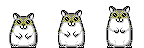

David Isquick
Personal agent · online
Product marketing leader across AI, developer platforms, and enterprise SaaS. Principal Product Marketer at Mintlify and founder of Muttgrams.
Product marketing leader
I build go-to-market strategy for AI, developer platforms, and enterprise SaaS — positioning, launches, pricing narratives, and the sales motion that carries them.
Right now I’m Principal Product Marketer at Mintlify. Before that I led product marketing for Creator and AI at Roblox, built the PMM team at Apollo GraphQL, and ran developer and product marketing at Optimizely and Facebook.
I’m also the founder of Edira LLC, where I built and shipped Muttgrams — an iOS app that sends you a daily photo from your dog and texts you back in their voice.
Twelve-plus years in, the through line is the same: make technical products legible to the people who buy them, and give the team a repeatable way to ship that story.
Twelve-plus years of product marketing across AI, developer platforms, and enterprise SaaS. Pick any stop to go deeper.
Earlier: Samsung Austin Semiconductor. The full detail is in the resume.
Launches, narratives, and the teams behind them
Each of these is a program I owned end to end — positioning through to the sales motion.
Optimizely Performance Edge · Messenger Platform · Facebook Spaces · Optimizely Rollouts · Facebook Analytics
Built the GTM launch framework from scratch, introducing tiering models and lifecycle milestones so PM and PMM run launches the same way every time. Led positioning, keynote content, and multi-channel marketing for tier-1 campaigns including the 2026 State of Knowledge Report, and defined the positioning pillars and GTM strategy behind the new AI pricing rollout. Stood up enterprise sales enablement and analyst briefings, and kicked off Win/Loss research and buyer journey gap assessments.
Orchestrated GTM for Roblox’s generative AI suite, including the launch of the AI Assistant, and grew product adoption 3X year over year. Directly managed a team of four PMMs covering messaging, naming, and product insights across the end-to-end creator ecosystem: Creation Tools, Engine, and Analytics. Ran content strategy for the RDC Creator Keynotes (RDC23–RDC25), including a record 98% satisfaction rate.
Developed the enterprise go-to-market motion and messaging alongside sales leadership, creating the pitch deck and outreach sequences that drove 4X revenue in two years. Built the PMM function with four direct reports across messaging, launches, competitive analysis, and enablement. Created the ideal customer profile and an account-based marketing strategy with marketing ops to prioritize the highest-propensity accounts, and led content for GraphQL Summit — the single largest pipeline driver of any marketing activity.
As the first developer-focused marketing hire, built the developer go-to-market strategy across blog, content, and events. Launched the freemium product Optimizely Rollouts in 2019 and grew it 619% year over year, then drove adoption up another 57% through content, nurture, and A/B testing. Later led a team of PMMs on integrated pipeline campaigns, owned content for the 2020 conferences attended by 4,000+ prospects, and built the GTM plan for strategic AWS and Microsoft integrations.
Brought Facebook Analytics to market and grew it past 800K users through webinars, email, social, blogs, events, whitepapers, press and analyst briefings, the product website, and ads. Also brought Facebook Spaces to market, Facebook’s first social VR app. Earlier, as a Client Solutions Manager, led ad strategy for top travel clients and grew the leading travel client’s spend by over $7M year over year.
Pages, launch collateral, and writing I produced or directed.
GraphQL Summit (Apollo GraphQL) · RDC25, RDC24, and RDC23 Creator Keynotes (Roblox) · Opticon and Test and Learn (Optimizely) · F8 (Facebook)
I ran content strategy for the RDC Creator Keynotes from RDC23 through RDC25, including a record 98% satisfaction rate, and led content for GraphQL Summit — the single largest pipeline driver of any marketing activity at Apollo.
The pattern underneath the launches.
Ideal customer profile first, then messaging. At Apollo that meant an ICP and ABM strategy built with marketing ops before a single sequence went out.
Tiering models and lifecycle milestones turn launches from heroics into a process PM and PMM can run together, which is what the Mintlify framework is for.
Freemium products, honest docs, and real technical content beat campaign volume. Rollouts grew 619% year over year on that premise.
Pitch decks, sequences, and analyst briefings are where positioning either survives contact with the market or quietly dies.
Founder · Edira LLC
Muttgrams is an iOS app that turns your dog into a text thread. Every day a photo “from” your pup lands in chat, and whatever you send gets a reply in their voice.
Download on the App Store muttgrams.com
Twelve years of marketing other people’s products left me wanting one of my own end to end, so I started Edira LLC and shipped Muttgrams to the App Store in July 2026: the product idea, the app, the AI chat, the subscription, and the marketing site. It’s a Tamagotchi crossed with a chatbot, and it is the shortest feedback loop I have ever had between a positioning decision and a real user.
Free on iPhone and iPad, with an optional Muttgrams Pro subscription.
Two pages: experience at Mintlify, Roblox, Apollo GraphQL, Optimizely, Facebook, and Samsung Austin Semiconductor, plus education and skills. Current as of my move to Mintlify.
Happy to talk positioning, developer marketing, or how to make an AI launch land.

dance the night away. Tribute to Deidre LaCarte’s 1998 original.
Before I had an agent, this site was a beige 90s desktop with a CRT, a boot screen, and a Start menu. It still runs.
3½ Floppy (A:) holds one file: resume_FINAL_v2_reallyfinal.pdf. CD-ROM (D:) says no disc inserted. Please insert a launch plan and try again.